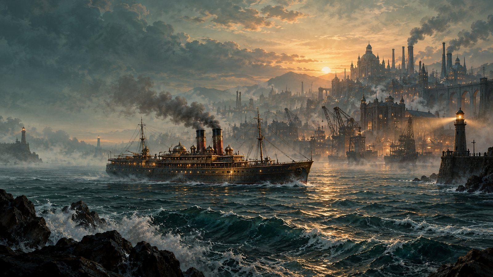

群岛贸易
每座港口的供需和价格都不同。低价买入、高价卖出，同时留意载重与航程。
TRADE & MARKET
THE VOYAGE
煤舱、货舱、载重与期限都会影响这一趟的收益。可以稳妥地跑熟一条航线，也可以冒险去更远的海域。
每座港口的供需和价格都不同。低价买入、高价卖出，同时留意载重与航程。
TRADE & MARKET锅炉、货舱、导航与安全设备会影响航速、运力和风险。按槽位和重量做取舍，逐步升级自己的船。
SHIPYARD & REFIT迷雾中还有未标记的港口和遗迹。购买情报、调查线索，再根据方向与航程决定是否出发。
CHART & DISCOVERY侧舷齐射、臼炮抛射与连发炮压制各有适用距离。遭遇敌船时，需要判断交战还是撤离。
STEAM & CANNON招募舰长，编成阵型并选择战术，让多艘船一起执行护航或袭击任务。
FLEET & CAPTAINS在海岸建立前哨，把煤与矿石加工成船材；也可以探索水下遗迹，寻找蓝图和遗物。
OUTPOST & RUINSTHE WORLD
从工业港铁港出发，经过香料港、自由镇、渔村与玻璃港。每次靠岸，行情、委托与传闻都会变化。

SCENES
港口、船只与航行场景。点击图片可放大查看。
贸易、改装、STEAM NAVIGATOR
探索与海战。